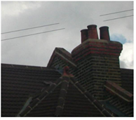
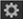

Open topic with navigation
Using the Clone Tool
The Clone tool lets you remove unwanted features from the plate or from a different input by painting over them with pixels offset from the pointer or a transformation of the pointer.
|

|
| Painting with the Clone tool. |
To Use the Clone Tool
|
1.
|
Click the Clone tool in the RotoPaint toolbar. |
|
2.
|
To view all the settings for the Clone tool, enable show clone settings in the RotoPaint tool settings at the top of the Viewer. |
|
3.
|
In the RotoPaint tool settings, set the paint source dropdown menu to the input you want to clone pixels from. (For information on the available options, see Editing Stroke-Specific Attributes.) |
You can also use the transform controls in the clone settings  to transform the clone source and reset it back to original with the reset button.
|
5.
|
To set the clone offset, hold down Ctrl/Cmd and left-click at the source location, drag to where you want to paint, and release. Alternatively, you can enter the offset numerically using the translate controls in the RotoPaint tool settings. If you’d like the offset amount to be rounded to an integer (whole number of pixels), check round. Rounding to a pixel can be useful if you don’t want to soften the image by partially blending pixels together. |
|
6.
|
Start painting. The pointer overlay depicts the source of the offset as a crosshair within a circle and the destination as a circle (the diameter of which represents the breadth of the stroke). |
You can use / (forward slash) and * (asterisk) on the numeric keypad to zoom your clone source in and out, and 0 (zero) and . (decimal point) to rotate it right and left. You can also use the number keys on the numeric keypad to nudge the clone source.
|
7.
|
To reset the clone offset, you can use Ctrl/Cmd+drag to adjust the offset you set before, or Ctrl/Cmd+Shift+drag to start a new offset from the brush pointer’s location. |
TIP: If you’re cloning from the current plate (foreground), you’re also cloning all the strokes/shapes you’ve previously drawn. If you want to clone from the original background or a different picture, you need to set the paint source dropdown menu to pull from that input.
TIP: To clone pixels from another frame of the input clip, you can use the time offset slider to define which frame you want to clone from. See Editing Clone or Reveal Attributes.